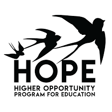
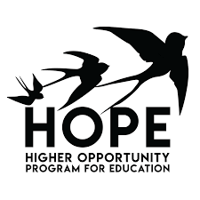

Chris Lam
I'm a 2nd year student at UCLA studying Computer Science & Engineering with a Linguistics minor. My experiences so far in software have mainly been web development (full-stack), but I am exporing my interests and want to learn as much as I can! I am an altruist and enjoy being able to help others, whether it is through community service, mentorship, or tutoring. I also love the different ways humans interact: music, languages, cultures, etc.
Organizations
 

Social Sciences Computing
June 2018 - Present | Student Programmer
Social Sciences Computing is responsible for websites and servers used by thousands of students and faculty in and out of the Social Sciences department. As a student programmer, I completed day-to-day assigned tasks, including setting up a LEMP-Wordpress server, testing site evaluation tools, and improving websites using Wordpress, HTML/CSS/JS, and PHP.
Since November 2018, we have been developing a Hate Crime Map that allows people to submit reports of hate crime, which goes through a verification process, then visualize that data. The previous project owner left off on a bare-bones working prototype with a ReactJS front-end, ExpressJS back-end, and PostgreSQL database, hosted on Heroku. Moving forward with the professors and project partners, we are tasked with realizing and implementing a useful filter and visualization method
Circle K International
May 2018 - Present | District Software Developer
As the first year of California-Nevada-Hawaii Circle K's Technology Committee, the software developers discussed potential technologies that can improve efficiency throughout the district. We brainstormed and tackled a project to facilitate data flow. The Monthly Report Form Portal aims to establish organization in the monthly process of over 40 secretaries gathering data (member service hours, funds raised for charities, etc.), filling out Excel sheets, and emailing them to the District Secretary.
I worked on the front-end, using Angular 2+ to provide a UI/UX for the data handled by the back-end built on NodeJS and MongoDB. During the summer, from June-August, I prototyped a working concept with Angular Material. The next step was to improve the user interface, so I implemented cleaner mockups and discussed ways to make using the software, from sign-up to data submission, as intuitive and simple as possible for a general member.
April 2018 - Present | Technology Chair
The Technology Chair of UCLA Circle K is mainly responsible for maintaining the club website and creating weekly presentations for general body meetings. As the website I came into the term with was bloated on Wordpress (and even gave 500 loading errors sporadically), I worked with my subcommittee to build a completely new one---a MERN stack on a blank droplet on Digital Ocean. Having used a MEAN stack (MongoDB-Express-Angular-NodeJS) for the Monthly Report Form Portal described above, it was not too daunting inserting React into the pack. Plus, we used frameworks such as KeystoneJS (a Content Management System for Node) and NextJS (a server-side rendering framework) to speed up the development process.
Quickly, I turned my focus to allowing my committee members to learn, rather than doing everything myself. I fell into a habit of organizing thing to fix/update/implement on the website and delegating to particular interests; my interest leaned a bit more toward back-end so I implemented most of the REST API and routing/database logic. I decided to expand this attitude to more than the website developers, so I replaced the notion of "subchairs" with "Website, Media, and Projects Teams" to facilitate a real work experience on a team with a particular goal: to learn and to create the image of the club. Switching my attention from building a website to building a team allowed the club to tackle multiple things at once, such as media for meetings and a mobile application for more accessible updates.
Upsilon Pi Epsilon
April 2018 - Present | Member
I inducted into this Computer Science honor society my first year, Spring of 2018. The organization emphasizes personal growth and connecting with high achieving individuals. As a member, I attend professional development events and also tutor. Tutoring is my favorite part of UPE because I enjoy helping others succeed, particularly if I can give advice from my own personal experiences.
VSU HOPE
October 2017 - March 2018 | Intern
Projects
HateCrimeMap
November 2018 - Present | Social Sciences Computing
A web interface to report and visualize hate crimes around the United States. Described above under Social Sciences Computing.
MRF Portal
May 2018 - Present | CNH Technology Committee
A web app organize and submit club/distict data (e.g. service hours and funds raised). Described above under Circle K International - Software developer.
Live Stock
March 2018 | LA Hacks
Awarded Best Use of Blackrock API, Live Stock was a stock advising tool integrating both technical analysis and sentiment analysis. I setup the NodeJS server to gather, compute, and serve data. I worked with an Economics student to implement the technical analysis algorithms, such as various macd's. The other team members worked on a Bootstrap-driven front-end and the sentiment analysis, handled by Google's natural language processing API combined with Twitter's data API and some augments to account for bias.